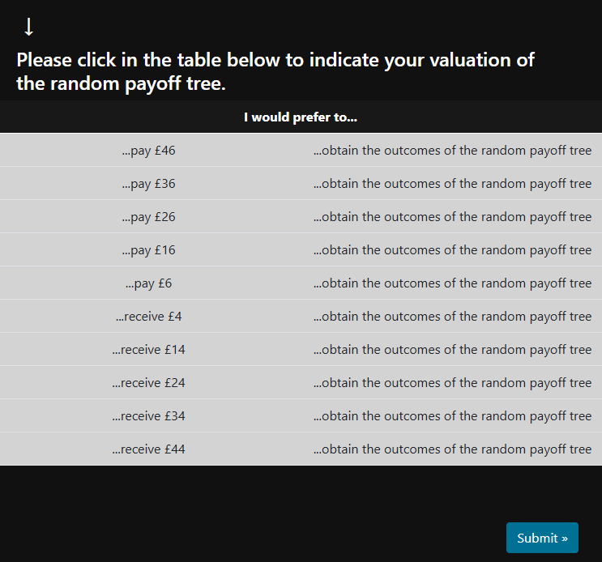
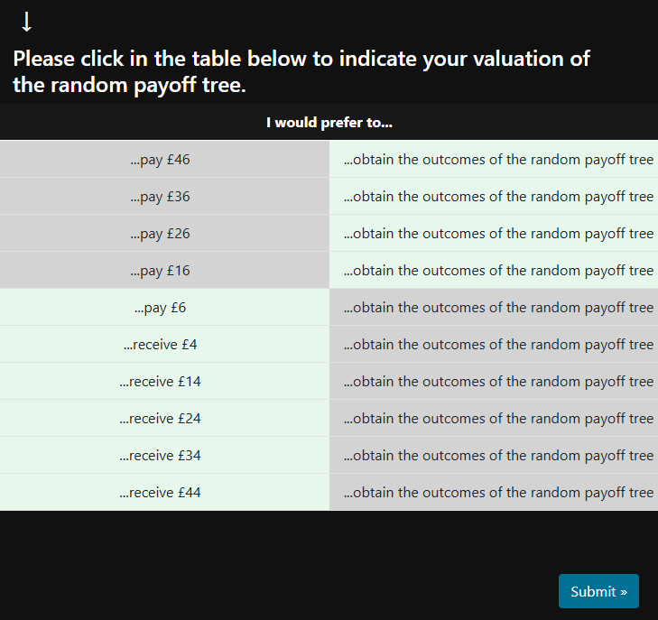
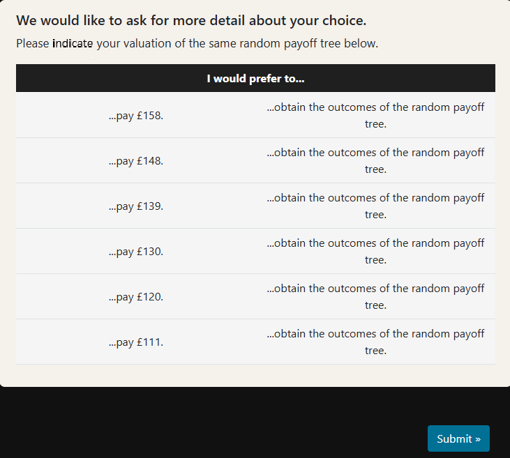

Full instructions
Please read this section carefully. This page includes important information regarding your successful participation, which is crucial for our research and your payment.
Sessions
There are three sessions for the study. Each time, you will return via Prolific and open the study link to make decisions. The first session is long (about 30-45 min), the other two sessions are much shorter (about 7-15 min each). Please make sure that you attend all three sessions (only in that case will you receive the full compensation for the three sessions and the extra payment of £5).
AI policy and authenticity check
During this study, we will obtain information from Prolific (your email address and demographic infor-mation).
If the study is interrupted (e.g., due to your device running out of battery), you will be able to resume the study by logging back into the same Prolific account and use the same study link. If you encounter any technical difficulties, please contact us immediately via the Prolific internal messaging system. Depending on circumstances, we will arrange other study slots for you or directly pay you accordingly.
We care about your privacy. Any personal information collected for administrative purposes (e.g., payments, scheduling) will be stored separately from your study responses. Your answers in the study will be anonymised: direct identifiers are removed and replaced with participant codes so that responses cannot be traced back to you. Data will be stored in accordance with the data protection regulations of the University of St. Gallen and Prolific. The research team will only store the anonymised data after the data collection period has ended.
Participation in the study is voluntary, and you may withdraw at any time (implications for payments will be described in information below before starting the decision tasks). By completing this survey, you confirm your willingness and consent to participate in this study.
In this study, you will see several random payoff trees. Please find an example below. A random payoff tree contains four time periods. The first period is now. The second period is in three days (which is the time of the second session of this study). The third period is in six days (the time of the third and last session of this study). The fourth period is in nine days (three days after the last session of this study).

Understanding a random payoff tree
In the example, the leftmost time period contains only a sign ‘Start’. This is because the random payoff tree does not yield any payoff in the current period. In the next column, corresponding to the time period in three days indicated by “In three days (Session 2)”, there are two possible outcomes, ‘+£10’ and ‘-£10’. You can also see a fortune wheel indicating 60% and 40% probabilities (these probabilities are also shown next to the lines from “Start” to the outcomes). This means that there is a 60% probability that you receive £10 in three days. Similarly, there is a 40% probability to reach the outcome ‘-£10’, which means that there is a 40% probability that you will lose £10 (remember that for all outcomes in the random payoff trees, for gains and losses alike, no real money is involved – but please imagine these to be real gains or losses).
The fortune wheel is an illustration of the probabilities. If you could spin this fortune wheel once, there would be a 60% probability of the arrow pointing to the blue region when the wheel stops (corresponding to the upper outcome where you gain £10) and a 40% probability of the arrow pointing to the beige region (corresponding to the lower outcome where you lose £10).
The outcome in the third period (in six days, when Session 3 will take place) will depend on the outcome at the time of Session 2. If the random outcome at the time of Session 2 is a gain of £10, there will be a gain at the time of Session 3 of £7. Note that this gain comes in addition to the £10 gained at the time of Session 2. If the random outcome at the time of Session 2 is a loss of £10, there will be a loss at the time of Session 3 of £12 (indicated by “-£12”). This loss comes in addition to the loss of £10 at the time of Session 2.
Similarly, the outcome in the fourth period (three days after Session 3) will depend on the outcome in the third period (Session 3). If the outcome in the third period is a gain of £7, there will be an 80% chance that the out-come in the last time period will be a gain of £8 (in addition to the outcomes in the earlier time periods) and a 20% chance that there will be no additional gain or loss (indicated by “+£0”). gain at the time of Session 3 of £7. By contrast, if the outcome in the third period (Session 3) is a loss of £12, there will be a 50% chance that the outcome in the last time period will be a gain of £2 (in addition to the outcomes in earlier time periods) and a 50% chance that there will be gain of £5.
How to Evaluate a random payoff tree
Your main task in this study is to evaluate such random payoff trees. We want to know how much money such a random payoff tree would be worth to you. Therefore, we will present you with a series of alternative options. For each option, please indicate whether you would prefer to receive or pay the shown amount or receive the outcomes determined by the random payoff tree. The shown monetary amounts and outcomes are hypo-thetical and do not affect your payment. When you click on “Start evaluation”, you will see a pop-out sidebar as the following:

You do not have to click on each single row in the table. If you make a choice for one row, other rows are filled automatically. Example: if you click on “I would prefer to receive £8”, then automatically all options where you receive more than £8 will also be selected (for comparisons where you would receive less than £8, the option “I would prefer to obtain the outcomes of the random payoff tree” will then automatically be selected). If you click on another field, your choice will be updated. Once the indicated choices correspond to your preferences, click on “Submit”.

Sometimes, we will ask for more detail. This happens when the table uses larger increments (e.g., £20 steps). In that case, we show a follow-up table with smaller increments to pinpoint your preference. In that case you will see a similar table asking you for more detail regarding your choice, as for instance below:
After you click on “Submit”, you will proceed to the next random payoff tree. There are 15 random payoff trees to evaluate in this session (Session 1). When you have submitted a selection, your answer is recorded and you cannot go back and change it.
The decisions that you make here do not determine your payment. You are only providing us with insights on how you are valuing the random payoff trees; you will neither actually participate in a random payoff tree nor receive or pay any of the money in the tables in which you indicate your choices.
Sessions
In this first session, you will be asked to evaluate several random payoff trees. At the end of the session, one of these payoff trees will be randomly selected. This selected tree will become your payoff tree. Your subsequent two sessions of the study will be only about this selected payoff tree.
Please imagine that the outcomes of this payoff tree correspond to actual monetary gains or losses that may occur in the future. Although no real money will be gained or lost, it is important that you make your evaluations as if the outcomes were financially consequential.
In the second and third sessions, you will be informed about which random outcomes have been realised, and you will be asked to evaluate the remaining parts of your selected payoff tree.
Payments
You will receive the following financial reward for filling out the study questionnaire carefully and truth-fully. After having completed the first session, you will receive £10. After having completed the second session, you will receive another £5. After having completed the third session, you will receive £5 plus an extra payment of £5. Note that you can only take part in the subsequent sessions if you completed the previous ones. It is important that you log in to complete these sessions in time, as there is only a 24-hour window for these sessions to start and finish! Furthermore, if you attend all three sessions and the quality of your responses is deemed sufficiently high, you will participate in a lottery that will award £300 to one participant of the experi-ment.
To avoid you missing one session, we will send you messages 24 hours and 1 hour before the next session starts. After the session starts, you have 24 hours to complete the session.
You will not be paid for a session if one of the following applies:
a) your submission is rejected following Prolific's automated authenticity checks; or
b) you do not complete the session within 24 hours of first opening the session link.
If your submission is rejected for any session and there are later sessions, you will not be able to take part in those later sessions. In that case, you will also not be eligible for any completion bonus or for entry into the £300 prize draw.
You can go back to the study software by switching browser tabs or by closing these instructions.